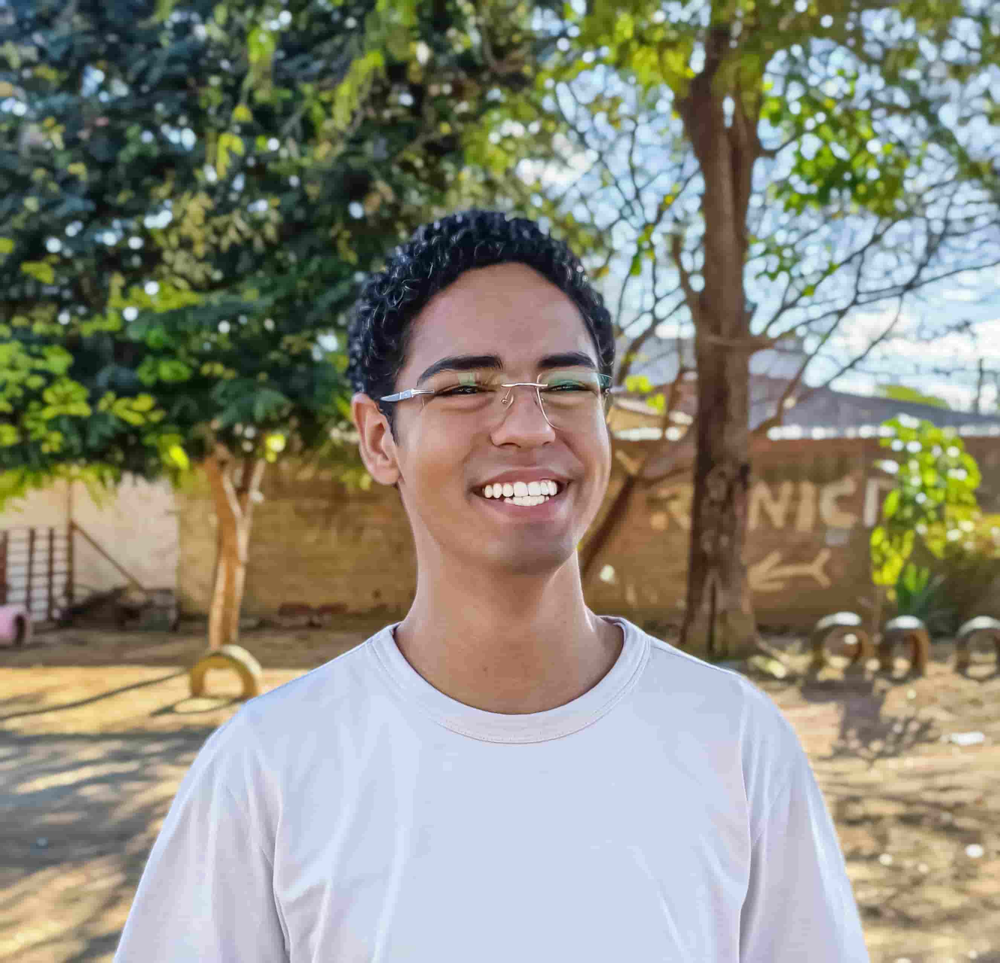

Gabriel Mercês Silva | WDD 130
My name is Gabriel Mercês Silva, and I am a software developer from Brazil with two years of practical experience building mobile applications using React Native. I am currently pursuing a Bachelor's degree in Software Development at BYU-Idaho, focusing on web and computational programming. My expertise lies in implementing user interfaces and integrating external services, with growing proficiency in JavaScript, TypeScript, and modern web technologies like React, Next.js, and Express. I have experience collaborating with international remote teams, using Git-based workflows and agile practices, most notably as a volunteer Full Stack Developer for the non-profit "Redeem These Ashes." I am passionate about creating complete solutions from front-end to back-end and am always eager to learn new technologies.